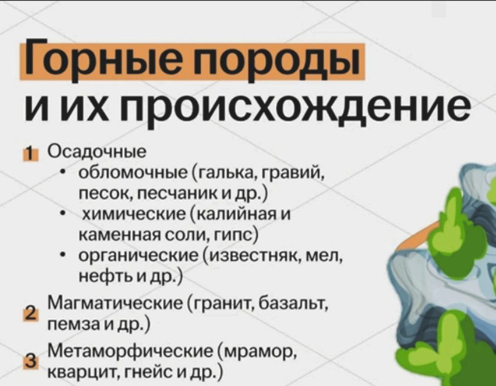
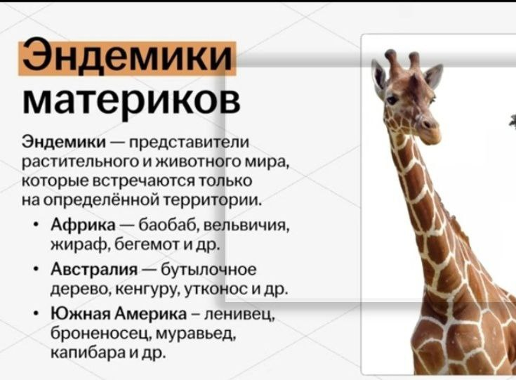
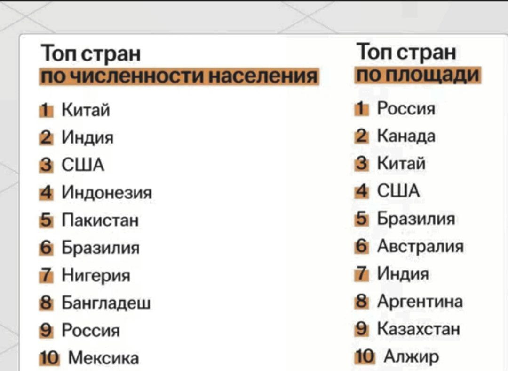
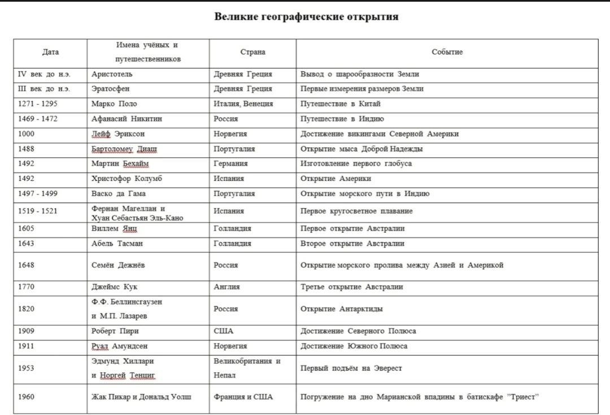

В данном задании потребуется ответить на вопросы о природных особенностях и народах Земли.
Самый большой материк Земли — Евразия, его площадь 50,6 млн. км2.
Самый маленький материк Земли — Австралия. Его площадь 7,6 млн. км2
Самый большой остров - Гренландия - 2176 тыс. км2.
Самый большой и глубокий океан – Тихий. Площадь его с морями 178,7 млн. км2. Средняя глубина около 4 тыс. м, максимальная — 11 022 м (Марианский желоб).
Самый малый и неглубокий океан — Северный Ледовитый. Площадь его 14,75 млн. км2.
Самая высочайшая вершина мира- г. Джомолунгма (Эверест) — 8848 м
Самая низкая точка суши — побережье Мертвого моря, лежащего на 408 м ниже уровня моря.
Самая большая низменность Земли — Амазонская (площадь свыше 5 млн. км2) — расположена в Южной Америке.
Самый высокий вулкан — Льюльяйльяко (в Южной Америке) — 6723 м над уровнем моря.
Самое глубокое место Мирового океана - Марианский желоб — 11 022 м.
Самое жаркое место на Земле- район Триполи (Северная Африка): +58 °С; в долине Смерти (США, Калифорния): +56,7 "С.
Самая низкая температура воздуха наблюдалась в Антарктиде на станции «Восток»: —89,2 °С; в районе Оймякона: —71 °С.(полюс холода России).
Самое влажное место на Земле - район Черапунджи (Индия) — 10 854 мм.
Самое наименьшее среднегодовое количество осадков выпадает в районах Дахла (Египет) — 1 мм; Икика (Чили) — 3 мм.
Самый холодный материк Земли — Антарктида.
Самый жаркий материк — Африка. В Африке зарегистрированы самые большие суточные колебания температуры — более 50 °С в районе Сахары.
Самая большая годовая амплитуда колебания температуры — в Евразии. Здесь, в Оймяконе, расположен полюс холода Северного полушария. Морозы зимой иногда достигают —70 °С, среднеянварская температура: —50 °С, среднеиюльская температура: + 18,8° С.
Самый высокий водопад мира —Анхельна реке Чурун (Гвинейское плоскогорье, Венесуэла).
Самое большое озеро — Каспийское; его площадь 371 тыс. км2.
Самое глубокое озеро — Байкал; его глубина 1620 м.
Самая большая и многоводная река Земли — Амазонка.
Самый глубоких каньон мира — Большой каньон Колорадо в США, его протяженность 320 км, глубина — 1800 м, ширина — от 8 до 25 км.
Самая крупная карстовая пещера мира- Мамонтова пещера на плато Камберленд в США. Это сложная пятиярусная система полостей глубиной до 300 м, суммарной длиной 240 км.
Самый большой гейзер- гейзер «Гигант» в Йеллоустонском национальном парке США. Высота столба кипящей воды, которую выбрасывает этот гейзер, достигает 91 м.
Самая длинная ночь — полярная — продолжается полгода на Северном полюсе, сменяя полярный день.
Самое высокое на Земле дерево - секвойи (в высоту достигает ста и более метров, а в диаметре — 6—10 м). Живут секвойи до 2 тыс. лет, а иногда и до 4 тыс. Родина этих деревьев — Северная Америка.
Самая большая постройка, созданная на Земле живыми существами - Большой Барьерный риф у восточного побережья Австралии.
Самое мощное теплое морское течение — Гольфстрим. Его ширина — от 75 до 200 км, толщина — 700— 800 м, скорость—от 6—10 до 3—4 км/ч, температура — от +24 °С (в феврале) до +28 °С (в августе).
Самое длинное течение- течение Западных ветров
Самое большое и самое глубокое на планете море — Филиппинское. Площадь его 5,7 млн. км2, наибольшая глубина — 10 265 м в Филиппинском желобе.
Самое большое море, омывающее берега России,—Берингово. Площадь его 2,3 млн. км2, наибольшая глубина достигает 5500 м.
Самое малое море —Мраморное. Площадь его около 12 тыс. км2. Его ширина 80 км, длина 280 км. Наибольшая глубина достигает 1273 м.
Самое мелкое море — Азовское. Средняя глубина его 8 м, а наибольшая — 15 м. Площадь моря 39 тыс. км2.
Самое пресноводное море — Балтийское. Оно в 4—5 раз преснее Мирового океана.
Самое теплое и самое соленое море — Красное. Средняя температура воды в феврале + 18 °С на севере и до +26,5 °С на юге. Летом вода прогревается до +32 ° С, на глубине -до +22 °С
Самые холодные моря - Восточно-Сибирское и Бофорта в Северном Ледовитом океане и моря Росса и Уэделла возле берегов Антарктиды.
Самый большой по протяженности пролив — Мозамбикский. Длина его около 1760 км, ширина — от 422 до 925 км. Он отделяет Мадагаскар от Африки.
Самым широкий и глубокий пролив - пролив Дрейка, отделяющий Южную Америку от Антарктиды. Его ширина 1120 км, а максимальная глубина 5249 м.
Самый узкий межконтинентальный пролив — Босфор, соединяющий Черное море с Мраморным. Ширина — от 750 до 3700 м, длина около 30 км.
Самый длинный искусственный морской канал — Суэцкий — длиной 161 км. По каналу проходит географическая граница между Азией и Африкой. За год канал пропускает 20 тыс. судов. Канал сокращает путь из Европы в Индию на 3000 миль, в Китай — на 3600 миль. Сооружался с 1858 по 1869 г.
Самая высокая приливная волна в заливе Фанди — от 16 до 18 м.
   